Södermalm i tid och rum
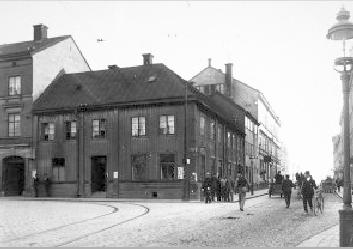
20.
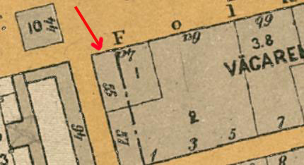
{kind=link}
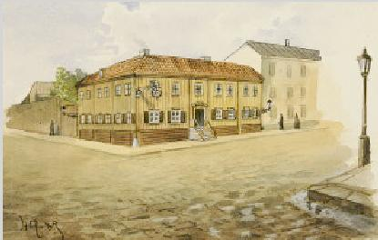
|
Wikipedia
Källaren Hamburg var en krog som öppnade på 1600-talet och låg vid Götgatan 53 (f.d. 47) på Södermalm i Stockholm. Verksamheten lades ner 1908 och huset revs 1912.
Krogen fanns redan på 1640-talet och fick sitt namn efter krögaren Henrik Hamburg. Källaren Hamburg blev ökänd för att de dödsdömda fick sin sista sup här innan de fördes vidare till galgbacken i nuvarande Hammarbyhöjden. Glasen som de dödsdömda drack ur ska ha sparats i ett blått skåp för allmän beskådan. År 1908 stängdes krogen då byggnaden ansågs vara i för dåligt skick. Byggnaden revs sedan 1912.
Serveringsrättigheterna köptes då av Stockholms utskänkningsbolag som samma år öppnade krogen "Grå Kvarn" (efter närbelägna Borgmästarkvarnen), nuvarande restaurang Kvarnen, på Tjärhovsgatan. Kåken där källaren Hamburg huserade revs 1912 och 20 år senare, den 25 januari 1928, invigdes Göta Lejon av Svensk Filmindustri på samma plats.
Skåpet längst till höger anses ha varit det skåp där de dödsdömdas glas, efter "Sista supen" ställdes in. Glasen lär ha etiketterats. När källaren Hamburg stängdes 1908 hade glasen sålts på auktion (1890-talet) och köpts av en amerikan. Huset revs 1912.
|
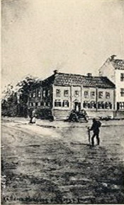 Tuschteckning, K Du Puy, Källaren Hamburg, |
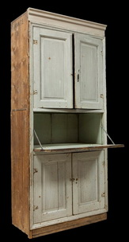 |
{kind=link}
{kind=link}
|
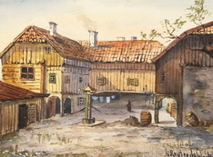 Källaren Hamburg, gårdssidan
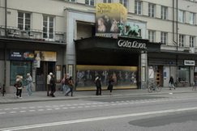 |
Ur Tjerneld: Stockholmsliv, del 2, 1950
Hamburg skilde sig väl inte nämnvärt från de övriga källarna efter Götgatan, men sambandet med de dödsdömda gav den en särskild atmosfär, som också gjort att namnet stannat längre än andra i folks minne. Att den siste dödsdömde for denna klassiska väg för så länge sedan som den 8 januari 1862 och att själva krogen revs 1912 betyder inte mycket; då det gäller traditioner av detta färgstarka slag mäts tiden i sekler.
På ett utmärkt sätt har traditionen kring Hamburg tecknats av Hasse Z. i kapitlet "Galgbacken" i hans bok "Ulf". Han låter den gamle Klerk-Gustaf, kyrkogårdsgubben från Maria kyrka, en septemberkväll sitta på serveringen i Skanskvarn och filosofera och då kommer han snart in på frågan om Hamburg.
|
{kind=link}
{kind=link}
{kind=link}
|
"Jag ser syner säger han, jag ser hela gatan ända ned till hamnen. Jag ser dem komma i den lilla kärran, som skramlar fram mellan folkhopen efter husväggarna. Där åkte de gatan upp, den sista resan. Rätt upp gick färden och de stannade inte förrän vid Hamburg, krogen där nere i hörnan. Där fick dom sitt sista glas, färdknäppen, kan man säga. Dom gömmer glasen ännu där nere, i ett särskilt
skåp, för dem som är nyfikna och vill titta på dom. Gardisten, rånmördaren, en av de sista, som kom åkande där, skrattade och ville ha mer. Stolen brast under honom, när han skulle sätta sej. Man skulle trott att det var ett skämt, men det var det inte. Han tog det inte heller så. Det betyder otur, sa han, och så gick han ut och satte sig i kärran och viftade åt folket. En präst fick där sitt sista glas. Det skrevs vers om honom när han var död. Så fin var han: "En Gud- och samvetslöser Präst Är här begraven Galgen näst; Hans kropp var intet bättre värd, Ty eljest han fått Frommas färd.Han ska inte tro att dom skakade på manschetten de karlarna. Modigt folk var det. Prästen talade till och med till folket. Nå, det är ju mest fåfänga, allra värsta fåfänga. Men människorna äro en gång sådana." Om Hamburg vet man för övrigt, att stället troligen har sitt namn efter vinskänken Henrik Hamburg, som blev borgare i Stockholm 1654. . Henrik Hamburg hade tagit namn efter sin födelsestad, och på krogskylten, |
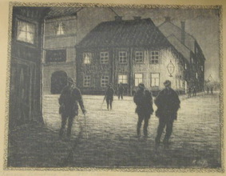
som ännu i början av 1900-talet hängde över dörren till Götgatan 55 (nuvarande 53), urskilde man stadsvapnet, Hamburgs rådhus
Hamburg hörde till de näringsställen, vars rättigheter inlöstes av Stockholms utskänkningsaktiebolag för att drivas vidare i eget regi och överlevde sålunda det för Stockholms krogar så kritiska aret 1877. Krogrörelsen fortsatte i Götgatan 55 till hösten 1808, då den flyttade tvärs över Tjärhovsgatan till modernare men mindre traditionsmättade lokaler.
|
{kind=link}
|
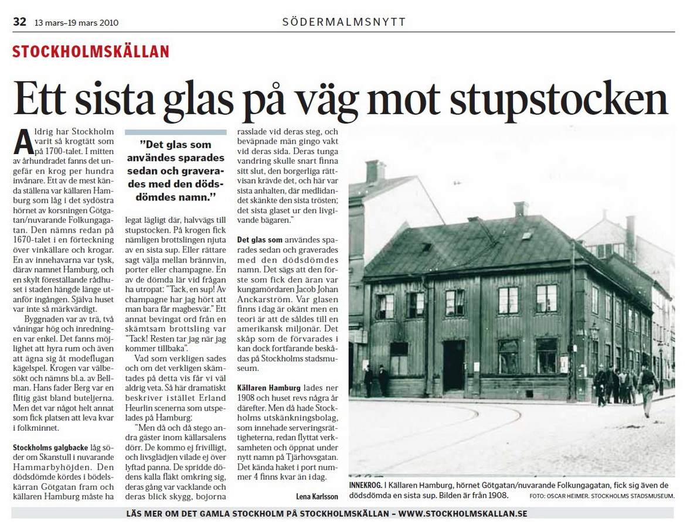 |
|
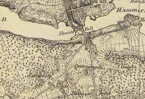 |
Galgbacken i Hammarbyhöjden var en galgbacke och Stockholms största och sista offentliga avrättningsplats. Själva galgen fanns i norra delen av Hammarbyhöjden på en liten kulle strax söder om Kalmgatan. Nedanför kullen vid dagens Solandergatan låg avrättningsplatsen där några stenar markerar platsen som numera är ett fast fornminne. Här ägde Stockholms sista offentliga avrättning rum. Tidigare låg avrättningsplatsen sedan 1500-talet på Stigberget på Södermalm, men på 1600-talet flyttades den utanför tullen vid Skanstull. De dödsdömda fördes då till Galgbacken längs Götha vägen (idag Götgatan) och de ska ha fått en sista sup på Källaren Hamburg, som låg i hörnet av Götgatan - Folkungagatan. Den 16 januari 1771 avrättades tjuven Jacob Guntlack, född 1744, genom hängning på galgbacken. På Galgbacken utfördes inte enbart hängningar. En annan historiskt känd person som avslutade sitt liv 1792 på Hammarbys Galgbacke var Gustav III:s mördare Jacob Johan Anckarström som blev avrättad genom halshuggning. Andra som miste livet här var baron von Görtz och prästen Peter Brenner den 4 juni 1720. Själva straffet utfördes av stadens skarprättare. Den sista hängningen ägde rum 1818 och den sista offentliga avrättningen företogs 1862 då gardisten Pehr Viktor Göthe blev halshuggen som straff för våldtäkt och mord på butiksföreståndarinnan Anna Sofia Forssberg boende på Hornsgatan 7. Själva avrättningen verkställdes av Stockholms officiella skarprättare Johan Fredrik Hjort och beskådades av drygt 4 000 personer. Det sägs att byggnadsarbetarna hittade skelettdelar vid Galgbacken när bostadsområdet Hammarbyhöjden byggdes på 1930-talet, vilket de tvingades hålla tyst om för att inte skrämma bort de nya hyresgästerna. Fram till mitten av 1980-talet fanns även en liten tvärgata till Kalmgatan med namnet "Galgbacken" som ledde fram till kullen, där Galgbacken en gång låg. Därifrån har man en vidsträckt utsikt över staden. |
{kind=link}
{kind=link}
{kind=link}
Ur Tjerneld, Stockholmsliv, del II, 1950
|
Galgbacken. Stockholms sista avrättningsplats - det hade ju funnits många
andra tidigare - låg på höjderna söder om Skanstull och dessa kallades därför ännu på 90-talet i dagligt tal för Galgbacken. »Högst uppe på Galgbacken lyste en röd gammal kvarn utan vingar. Den stod där naken och bar som ett torn, utan fyr utan ljus», skriver Hasse Z. i sin förut citerade bok. Av detta får man lätt den uppfattningen, att galgen skulle ha legat någonstans i närheten av kvarnen (vilken, för att göra det hela ännu mera förvirrat, på senare år flyttats norrut från sin ursprungliga plats) men så var inte fallet. Galgen stod längre österut på åsen och fundamentet till den kan ännu studeras i en liten plantering mellan kvarteren Humlan och Bålgetingen vid Olaus Magnus väg i Hammarbystaden, något som bestyrktes då man vid en arkeologisk utgrävning på platsen för en del år sedan (före 1950) hittade lik av hängda.
Om alltså minnet av själva lokaliteterna blev något diffust med åren så var i alla fall stämningen från förr levande. Hasse Z. skriver: »Men en sak ändrade sig icke. Ingen årstid, ingen ljus morgon, ingen mörk afton, kunde förändra dess karaktär. Den var alltid lika skrämmande, lika hemsk - Galgbacken. Det var inte bara namnet, som gjorde det, själva platsen var som smittad av allt den varit med om. I slutet av den långa gatan, som ledde nedifrån hamnen och ut till stadens tull, låg Galgbacken, högt bland kullar och berg, där tistlar och nässlor slogos med slån och hagtorn om platsen i skrevorna. Där lågo några små hus, förfallna och smutsiga. Där bodde löst folk, som man inte höll så noga reda på. Hörde man något från dem, var det mest genom polisen, ett slagsmål, ett dråp. I backen nedom kvarnen, i skydd för nordanvinden, lågo slakterierna. Dit fördes kreaturen in från landet, stora landsvägen, som gick rätt förbi Galgbacken, där söps och skrålades om nätterna och där ströko stadens hungriga hundar tjutande omkring.» Från denna stämningsbild, som väl fångar Söderbornas syn på Galgbacken, är det intressant att gå till en saklig skildring av det stora, folkliga evenemang som den sista offentliga avrättningen utgjorde. En sådan står att läsa i Aftonbladet och redan den gången visade tidningen journalistisk framåtanda eftersom referatet är infört samma dag som avrättningen ägde rum. Det mord som rekryten vid andra livgardet Pehr Victor Göthe begick på själva påskdagen 1861, då han med en kniv skar en ung flicka, Anna Sofia Forssberg, tiill döds i hennes bostad innanför affären i Hornsgatan 7 och sedan skändade den döda, hade upprört stockholmarna mer än någon liknande händelse på lång tid och då i januari 1862 det blev känt, att dödsdomen mot Göthe skulle verkställas talade hela staden om avrättningen. Den fastställda dagen var inte offentliggjord och därför samlades åskådarmassor flera lördagar å rad på Götgatan för att se Göthes färd till Galgbacken. Fredagen den 7 januari på kvällen gick ryktet över staden att exekutionen var bestämd till nästa dag och tidigt påföljande morgon började åkare och företagsamma omnibusägare köra ut folk till Skanstull. Och de for inte förgäves, klockan strax före halv nio fördes Göthe ut från cellfängelset vid Gamla Rådhuset. I referatet heter det: »Han åkte baklänges i en öppen vagn med rådstuguvaktmästaren bredvid sig. Mitt emot sutto fångpredikanten Afzelius, som berett honom till döden, och fängelsedirektören. Delinkventen var blek, men lugn, till och med obekymrad, och såg titt och ofta uppåt på åskådare i fönstren invid hans väg. Hans vagn följdes i hack och häl av en mängd åkdon med nyfikna och en ofantlig skara människor som sprungo av alla krafter för att hinna lika fort som delinkventen fram till avrättningsplatsen. På de gator som löpa parallellt med Götgatan såg man åkarna köra i kapp för att där, utan hinder av gående, komma framom den dömde till målet.» Något besök på källaren Hamburg tycks alltså denna gång inte ägt rum.
|
Ute på Galgbacken var allt i ordning, en schavott hade rests, femtio man från stadens garnison bildade spetsgård och en övervaktmästare i överståthåliarämbetet hade just läst upp domen. Åskådarna
stod i stora skaror runt spetsgården och goda utsiktspunkter som
kärror, trän och hustak hade utnyttjats. Mest var det väl arbetare
från Söder, men också en del kvinnor och barn syntes. Sammanlagt
uppskattades publiken till mellan fyra- och femtusen personer.
Referatet fortsätter:
Hjort, som innehade skarprättarsysslan även för Nyköpings, Uppsala samt Stockholms län, verkställde fram till sin död 1882 femton avrättningar, däribland av mördaren Hjert. Denna exekution ägde rum i Malmköping 1876. Året därpå avskaffades de offentliga avrättningarna. Efter Hjorts död kungjordes skarprättarsysslan ledig och inte mindre än tjugoåtta personer anmälde sig som sökande. Johan Persson Palmgren fick ämbetet, som han dock efter ett år avsade sig utan att ha varit i aktiv tjänst. Hans efterträdare blev Anders Gustaf Dahlman, vilken från 1885 tjänstgjorde till sin död 1920 och som verkställde den sista dödsdomen i Sverige 1910. Efter Dahlman behövde tjänsten inte besättas, 1921 avskaffades dödsstraffet i fredstid. Dahlman hade varit soldat och var en skötsam och präktig man som under hela sin tid som skarprättare förde ett ordentligt liv. Han bodde först ined sin familj vid Stora Badstugatan för att 1886 flytta till S:t Eriksgatan 22 (nuvarande 44), där han bodde kvar till två år före sin död. Dahlman blev skarprättare i det ena länet efter det andra alltefter som de gamla skarprättarna avled och var till slut hela Sveriges mästerman. Han verkställde de sex sista avrättningarna i Sverige, bland annat av Yngsjömörderskan 1890, av mördaren från Mälarbåten »Prins Carl», Nordlund, 1900 samt av Ander, mördaren på Gerelles växelkontor på Malmtorgsgatan, 1910. Vid denna sista avrättning användes för första och sista gången fallbila, giljotin, och Dahlman biträddes av sina tre söner.
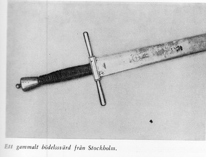 Dahlman levde som sagt mycket borgerligt och hade lyckats höja det sedan gammalt föraktade skarprättaryrket till oväntat hög social nivå. På dörrskylten till hans våning stod »A. G. Dahlman, skarp- rättare». I salongen låg på pianot ett fodral som såg ut som en vanlig fiollåda och i detta förvarades bilan. Eggen var rak, fyrtiofyra centimeter lång och tunn. I en intervju med Dahlman från 1899 påpekas, att bilan hade Eskilstunas fabrikationsstämpel och var »ett mästerverk av svensk smideskonst». Stupstocken timrade han själv. Dahlman hade lön från de olika länen och dessutom utgick för varje förrättning så kallade nackpengar, en gammal svensk institution. |